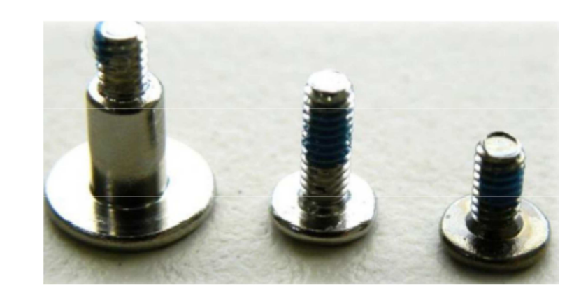

Esto con el objetivo de tener una mayor claridad al momento de desarmar el equipo y que los diferentes elementos no se confundan.
3.1. Parte Superior (Pantalla, Tarjeta Madre)
Tipo de Tornillos y Cantidades

Figura 3.1. Tipos de tornillos
Para inspeccionar la parte interna de la pantalla lo primero que debemos hacer es retirar los 4 tornillos que se encuentran en la parte inferior de la misma.
Figura 3.2. Tipos de tornillos
Luego retiramos los soportes del marco y el marco de pantalla. Una vez realizado esto debemos retirar los 4 tornillos que sujetan la pantalla al marco interior.
Figura 3.3. Tipos de tornillos
A continuación retiramos los 4 tornillos que unen la cubierta superior del equipo y el marco interno.
Figura 3.4. Tipos de tornillos
Retiramos la cubierta superior y procedemos a quitar los 4 tornillos que sujetan el disipador de calor.
Figura 3.5. Tipos de tornillos
Quitamos el tornillo que sujeta la tarjeta de red.
Figura 3.6. Tipos de tornillos
Y finalmente si el caso amerita retirar toda la tarjeta madre se deben desconectar los siguientes componentes.